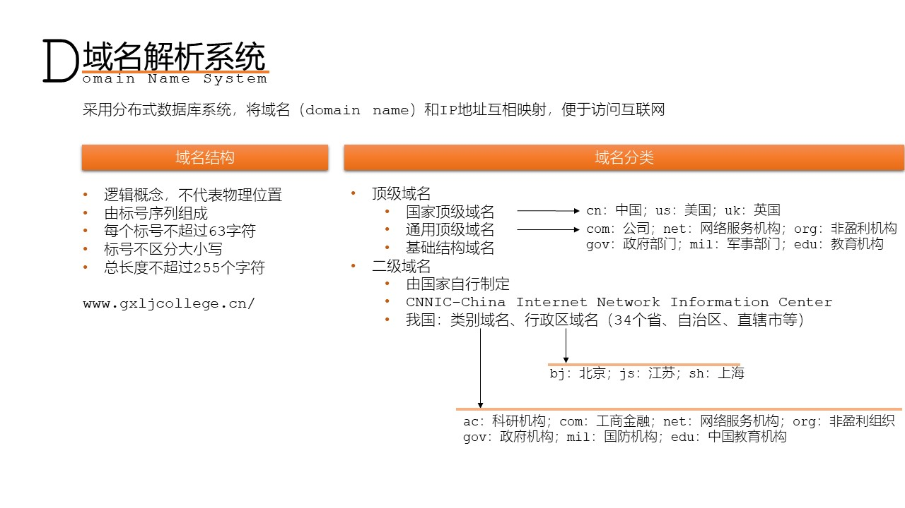
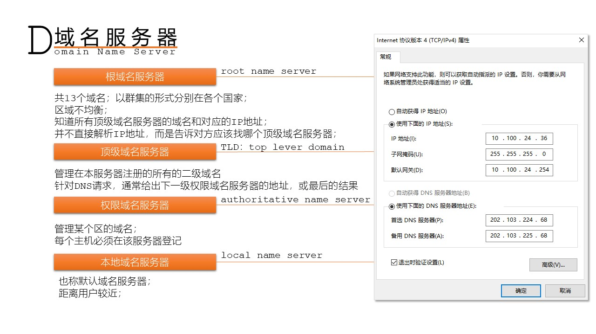
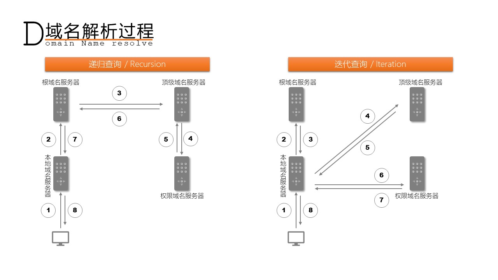

域名解析系统 DNS
- 概述
- 域名解析系统：DNSDomain Name System；
- 是互联网的一项服务。将域名和IP地址相互映射的一个分布式数据库，以便更方便地访问互联网；
- 协议端口：53；

- 图1 服务器请求过程

- 图2 DNS概述

- 图3 DNS分类

- 图4 DNS过程
- [案例]假设所有域名服务器均采用递归查询方式进行域名解析。当某台主机访问规范域名为www.abc.xyz.com的网站时，由某台域名服务器完成解析，则可能发出DNS查询的最少和最多次数分别是（）。
- A:0、3
- B:1、3
- C:0、4[本地缓存如果有，不需要查询；向根/、向com、向xyz.com、向abc.xyz.com]
- D:1、4
- [案例]如果本地域名服务器没有缓存，采用递归方式解析某台主机域名时，用户主机、本地域名服务器发送的域名请求消息数为（）。
- A:一条、一条[]
- B:一条、多条
- C:多条、一条
- D:多条、多条
- [案例]有关域名服务器，说法错误的是（）。
- A:可分为：根域名服务器、顶级域名服务器、权限域名服务器和本地域名服务器
- B:根域名服务器并不解析域名，而是把待查域名对应的顶级域名服务器的IP地址作为结果返回
- C:除根域名服务器外，其它域名服务器均能返回待查域名对应的IP地址[]
- D:本地域名服务器的IP地址应该直接配置在需要解析域名的主机中